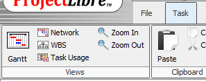
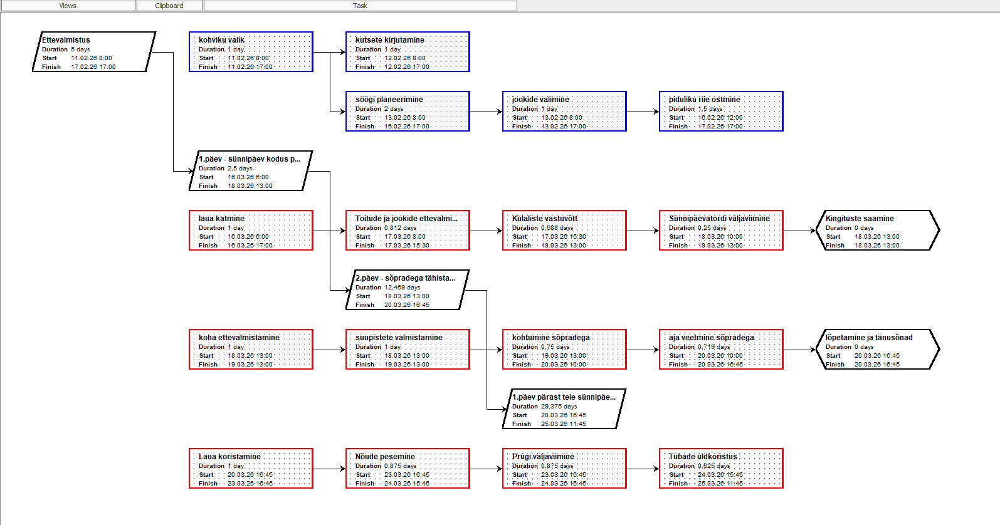
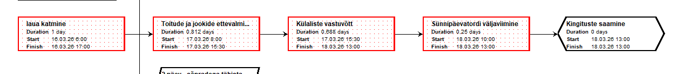

Vaate valimine menüüst Task
Erinevate diagrammide vahel lülitumiseks ava vahekaart Task. Vasakul servas näed nuppe, mis võimaldavad valida sobiva visualiseerimise viisi: Gantt, Network või WBS.

Network diagramm (Võrkdiagramm)
Nii näeb välja Network diagramm. See on loogiline skeem, mis keskendub ülesannete vahelistele seostele ja järjekorrale. Iga kast tähistab ülesannet ning nooled näitavad, milline töö peab eelnema järgmisele.

Kriitilise tee visualiseerimine
Network diagrammil muutuvad kriitilise tee ülesanded tavaliselt punaseks. See aitab projektijuhil koheselt näha, millised tegevused on ajakriitilised ja mille viibimine lükkab edasi kogu projekti lõppkuupäeva.

Miks on Network diagramm kasulik?
Erinevalt Gantti tabelist eemaldab Network vaade ajaskaala ja keskendub puhtalt loogikale. See on parim viis keeruliste seoste kontrollimiseks ja veendumiseks, et projekti ülesehitus on korrektne.